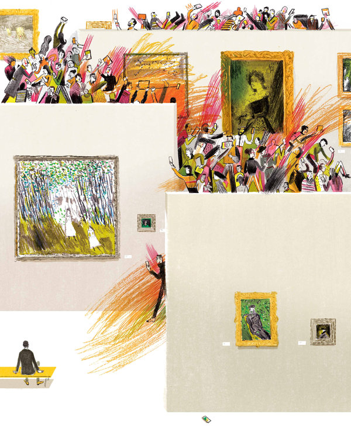
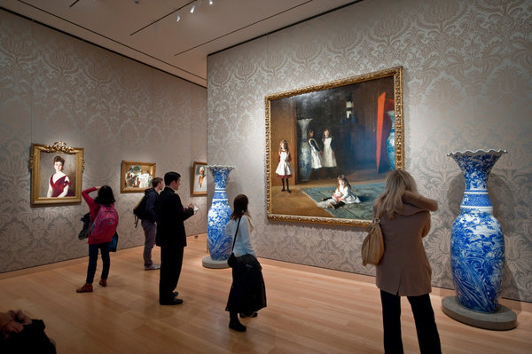

Tuning Out Digital Buzz, for an Intimate Communion With Art
By HOLLAND COTTER
March 16, 2015
Once upon a time, our big museums were the “quiet cars” of a fast-track American culture industry. Like libraries, they were places where the volume was low, the energy slow, the technology unobtrusive. You came to them to look, to think and, in the days before museums became the prime social spaces they are now, to be alone in a small, like-minded crowd. You could take a little art home by hitting the postcard rack in the gift shop. But the only way you would retain most of what you saw was by spending time in the galleries and imprinting things on your brain.
That model is pretty much a generational memory now. Today, millions of people stream through major museums, filling the air with a restless rustle and buzz. They move through galleries fast and with a new purpose — cellphones in hand, they’re on Instagram treks and selfie hunts — and with a new viewing rhythm: Stop, point, pose, snap. If you want, you can even take the tour remotely, virtually, as more and more institutions make their collections accessible on the Internet.
Accessibility is the first and last word on the lips of museum directors. The motives behind promoting the idea are complicated, but the basic idea is simple: More people should be able to see more art. Who would argue? A trip to the Metropolitan Museum of Art or the Louvre is as close to being a tour of the world as many of us can get. And objects that we call art have a particular, layered charisma. Beauty of form aside, they are carriers of values — political, spiritual and personal — through time. They are ethics and emotions made visible, as you begin to learn after you spend time with them.
A question is what, exactly, in an age of expanded digital access, are museum audiences seeing? Through electronic media — cellphone screens, laptops, Pinterest and Skype — we can survey an extraordinary amount of art, see how it is displayed in museum galleries, zoom in on close-up details. But what are we missing by not putting these filters aside and just standing in front of the thing itself?
My own introduction to art was remote and virtual, at home as a kid, looking through books, flipping pages, stopping when something caught my attention. But what got me hooked were visits to museums, notably the Museum of Fine Arts, Boston, and seeing crucial features of art that didn’t come through in reproduction.
Scale was one. I had no idea that John Singer Sargent’s 1882 painting “The Daughters of Edward Darley Boit” was as big as it was. It was as big as a room. You could walk into it. The same with Paul Gauguin’s panoramic 1897 “Where Do We Come From? What Are We? Where Are We Going?” In books, it was the size of a Band-Aid. Even photographs showing people standing in front of it didn’t prepare me for the jolt, when I saw the real thing, of feeling its size in relation to mine.
And there was the museum’s 12th-century Catalan fresco of “Christ in Majesty With Symbols of the Four Evangelists.” It was installed on a curved ceiling in a nichelike room so that it was over you and around you, with Christ tipping toward you, about to crash down. It was a thrilling sensation, untranslatable to the printed page or an iPad screen.
Texture didn’t fully translate in reproduction, either. My earliest memory of the South Asian gallery isn’t so much of a figure, but of a material: the soft, porous beige-pink sandstone of the museum’s great first-century B.C. carving of a fertility goddess from Sanchi. The stone seemed to swell with warmth. Beside it, other kinds of stone — the sleek gray schist of a Gandhara bodhisattva, say — felt cold and sealed-off.
Digital photographs can give a sense of all this. But they can’t inspire the urge to reach out and touch stone that’s right in front of you, to connect with it, skin to skin. And it was textures as much as images that first turned me on to Indian art.
Paintings are personal documents, their surfaces as readable as diary entries. And in some cases, the artist’s touch is clear even in reproduction. Rembrandt’s work is photogenic that way; so is Jackson Pollock’s. In the case of artists who made less theatrical use of paint, however, evidence of the hand can be hard to see and only slowly revealed, as I was reminded on a recent visit to the exhibition “Piero di Cosimo: The Poetry of Painting in Renaissance Florence,” at the National Gallery of Art in Washington.
Piero, who lived from 1462 to 1522, was one of the most versatile Florentine artists of his generation, sought after for altarpieces, portraits and secular images, to each of which he brought different styles. He is best known now for just one aspect of that output: wild and woolly mythological scenes set in a Darwinian world of battling half-beast, half-human creatures. The way they’re painted suits their subjects: with a loose, expressionistic verve.
I was less familiar with Piero’s religious paintings. Over the years, I had passed by some in museums, only half noticing them, and seen others in books and online. They registered in my mind as polished but somewhat impersonal variations on standard themes, distinguished mainly by an incidental wealth of fine realistic detail. Piero, it seemed, had brought formal finesse to his altarpieces but left himself out.
I had a different impression standing in front of them in Washington. For one thing, details that I’d been able to make out only with the aid of a zoom function online — feather-perfect birds, botanically correct flowers, glinting gems — were now clear to the eye and not incidental at all: They were integral to the compositions they appeared in. Piero’s paintings were holistic in a way I hadn’t guessed from afar.
And there, underneath the formal polish, was his hand in action. In one area, he’s laying on color in chunky strokes, paint-by-numbers style. In another, he’s adding thin, raised lines of highlight with a calligrapher’s precision. Elsewhere, he’s impatiently smooshing pigment around with his fingers. You can’t see all of this by standing directly in front of a picture. You have to move around, adjust your position, bend down and look up, catch the surface in different angles of light. In other words, to see a painting, you have to do a little dance with it, and take your time. From a digital distance, you see an image. In person, in a gallery, you feel that image breathing.
And a gallery has a life of its own. A recent scientific study published in the journal Acta Psychologica suggests that people enjoy art more and remember it longer when they see it “live” in museums, as opposed to online.
We don’t need science to tell us why this might be. Museums, like churches and libraries, are designed to enhance specific activities — praying, reading, looking — through the manipulation of architecture, lighting, object placement and ritualized behavior. Very different designs — from the processional layout of the Metropolitan Museum to the labyrinthine tangle of the new Fondation Louis Vuitton art center in Paris — can be equally effective. And some don’t work.
The Museum of Modern Art’s permanent collection galleries are boxy, white, workaday, with art lined up on the walls, shopping mall style. The arrangement is low on art-viewing ambience but turns out to be — who knew? — unusually well suited to selfies. In general, MoMA is encouraging the picture-taking impulse. The institution’s current performance-oriented programming, notably its Björk retrospective, accommodates digital spectacle that will, in turn, encourage digital consumption.
But what, in the context of virtual art viewing, becomes of work that can’t be captured on camera, art that is resolutely unspectacular, even materially disembodied, as was the case with early Conceptualism and some of its offshoots? In the 1960s, the artist Robert Barry created an installation consisting entirely of radio waves in an otherwise empty gallery. What made such work art was the fact that it was in a gallery. And for a full experience of it, you had to be in the gallery, too, to feel what was or wasn’t there, to feel not-thereness, or fullness, depending on your take.
This is a kind of art that couldn’t be photographed in its day, or digitally recorded or live-streamed in ours. It resists visual access. And in the present era of saturation marketing and inescapable surveillance, it may be that one of art’s most radically self-sustaining moves will be to go increasingly for inaccessibility, to find ways to exist beyond the point at which digital media can fully capture it.
Such art already exists in museums, often in solid, traditional forms. Among other examples, I’m thinking of certain paintings by the artist Agnes Martin. Most of her abstract pictures over a long career were variations on a single visual theme: an allover grid set on a plain one-color ground. In many paintings, the grid was reduced to evenly spaced horizontal bands. In some, the configuration consisted of nothing more than graphite pencil lines across a white-painted canvas. Hand-drawn, these lines have a slight, fine, personalizing tremor, enough to justify Martin’s assessment of her art as Abstract Expressionism, not Minimalism or hard-edge painting.
I recently sat in on a scholarly panel discussion of her work. In the course of the evening, one of her graphite-drawn paintings was projected in a PowerPoint display onto a large screen, and, to all appearances, there was nothing there: just an unmarked white square. The drawn lines were too faint to be seen. Visibility was always a problem with Martin’s art. Some of it was almost impossible to photograph and reproduce in print. It occurred to me that evening that this may be one reason her art hasn’t been much talked about since her death in 2004. In a digital age, it has disappeared.
When a work is seen firsthand in a museum gallery, however, fluctuating visibility is part of its operative dynamic. A hand-drawn painting that looks hazily blank from across a room gradually comes into focus — comes into being, you might say — as you approach it. Lines grow vaguely visible, then more distinct. And if you stay with the picture, a sensation of linear movement, optical vibration, sets in. Perhaps this effect of live energy could be captured at one remove, digitally, but I haven’t seen that. My evidence is that unless you see Martin’s art in person, slowly, you are, at very best, only half seeing it.
Cellphone snapshots, the souvenir postcards of the present, are fine, and that they can be widely, even endlessly sent and shared is great. The digital presence of entire museum collections online is a tremendous thing, a gift of pleasure and knowledge to museumgoers, scholars and artists alike.
But a snapshot is frozen in time. An archive of reproductions isn’t alive. And the further we distance ourselves from art itself, from being in front of it with all filters gone, life is what we lose — art’s and ours.
81 comments